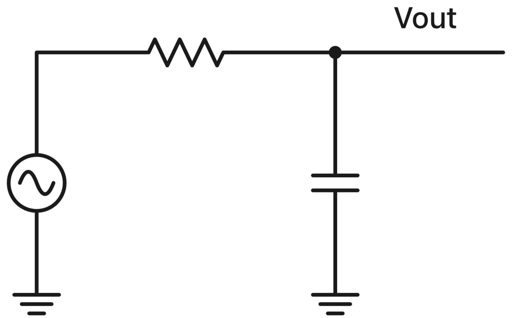
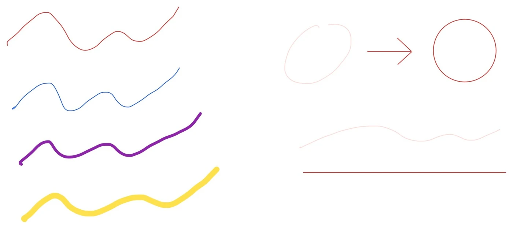
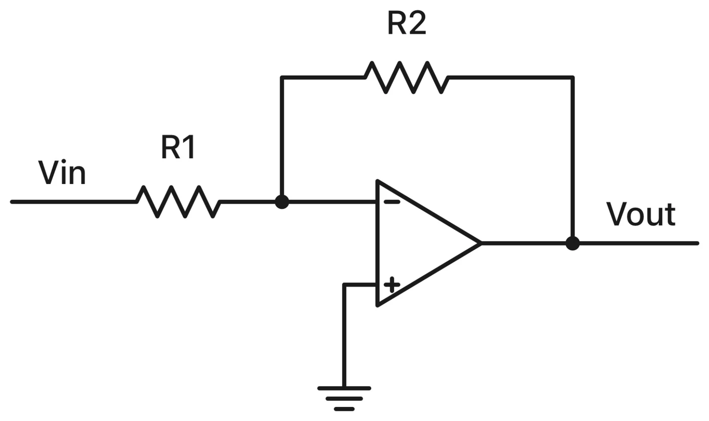

PaperNote
PaperNote is a handwriting app for iPad. I hope it helps everyone suffering through circuits (?
My personal favorites are floating images and page expansion. They're ridiculously handy :P

- No adsJust your notes on screen
- No trackingNo usage data collected
- No sign-upOpen it and start writing
- Open sourcePublic code under GPL-3.0
A side project born from dodging my college portfolio
PaperNote is a college student's passion project. It got a surprising amount of support (?
I've built a lot of features I love, and it's now my main notes app haha
If you like this project too and want to help with the running costs,
you're welcome to chip in on ko-fi!
Easy to write, easy to fix
From fine print to broad highlights, the pens you use are close at hand.

Seven pen types
Fountain pen, ballpoint, brush or dip pen, pencil, highlighter, crayon and watercolor, with color, width and dash settings.
Favorite brushes
Save and reorder your colors and widths for the toolbar and palette.
Hold to tidy
Pause while drawing to get a straight line, circle, triangle or quadrilateral.
Whole or partial erase
Erase just the part you touch, then switch back to your pen automatically.
Lasso
Circle ink, images, tables, circuits and text boxes to move, copy or delete them together.
Palm rejection
Left- or right-handed, with an option to keep fingers for scrolling only.
Handouts you can work on
Import textbooks and slides, then highlight, look up and translate in place.
Text-snapping highlighter
Highlights line up with the PDF's text.
Select to translate
Uses iPadOS translation. You can also copy or look up the selection.
Scans work too
Pages without a text layer are recognized on the iPad in Chinese, English and Japanese.
More room anywhere
Extend any page on any side without moving what is already there.
Outlines
Browse the PDF's own outline or add any page to yours.
Batch import
Import a zip of PDFs at once and keep its folders.
Neat tables, drawn by hand
Insert a table, or pick up the pen and draw one.

Draw to split
A line splits cells, adds a diagonal, or adds rows and columns alongside.
Erase to merge
Erase along a border and the cells merge.
Layout in one step
Distribute rows and columns, lock sizes, and set fills and borders.
Repeat a selection
Drag to repeat a layout and join the copies into one table.
Made for EE notes
67 built-in components, and wires that square up along the route you draw.

Wires that connect
Snap to pins and the grid, with automatic junction dots and crossover bridges.
Labels and subscripts
Type R_1 or x^2 for subscripts and superscripts, or number parts automatically.
Your own symbols
Draw a symbol, add pins, and use it like a built-in part.
Custom circuits
Save a current mirror or an amplifier stage to reuse later.
Always editable
Rotate, flip and reshape parts and wires after placing them.
Export
Save SVG or a netlist for reports and analysis.
In the component library
- Passive
- Resistor, capacitor, inductor, variable resistor, potentiometer, fuse, transformer
- Diodes
- Standard, Schottky, Zener, tunnel, LED, photodiode, varactor
- Transistors
- NMOS, PMOS (incl. 4-terminal), NPN, PNP, JFET, IGBT
- Amplifiers
- Op amp, fully differential, OTA
- Logic gates
- AND, OR, NAND, NOR, XOR, XNOR, NOT, buffer
- Digital blocks
- D flip-flop, D latch, multiplexer, encoder, decoder, ALU
- Sources
- Voltage, current, battery, sine, square, controlled
- Ground and power
- Ground, signal, chassis, VDD, VSS
- Switches and meters
- Switches, push button, SPDT, voltmeter, ammeter, ohmmeter, lamp
- Other
- ADC, DAC, mixer, antenna, and the parts you draw
Keep the part you need in view
Hold on to a problem, formula or figure while you turn the pages.
Rectangle or freeform capture
Copy, save to Photos, or translate the text in the image.
Pin to screen
Keep a capture on top, in every tab or only in one notebook.
Make stickers
Remove image backgrounds. Stickers made from ink can still be recolored and erased.
Text and sticky notes
Includes three open-source Chinese typefaces.
A semester you can find again
A folder per course, with the notebooks you need open together.
Tabs and groups
Open several notebooks and group them by course.
Favorites
Star documents or single pages, and give a page a short note.
Search and sort
Search notebook names and sort by name, date modified or date created.
Four papers
Blank, ruled, grid or dotted, in A4, B5 or Letter, portrait or landscape.
30-day trash
Restore deleted notebooks, folders and pages within 30 days.
Export your way
Export chosen pages as PDF, or as an editable PaperNote file.
Apple Pencil gestures
- Double-tap
- Switch between pen and eraser, optionally showing the palette icon.
- Squeeze Pencil Pro
- Open the palette, or jump to a tool you choose in settings.
- Pause while drawing
- Snap to a line or shape, and adjust it before lifting.
- Double-tap in a table
- Switch between drawing and erasing borders.
Your notes stay yours
Notes live on your iPad. Connect your own Google Drive only if you want a backup.
Why PaperNote requests Google Drive access
Backup is optional. When connected, PaperNote requests only the drive.file permission, for two purposes: to back up your notes to the “PaperNoteBackup” folder in your Google Drive, and to restore them from there when you ask.
Can't see other files
It can access only files the app created.
No developer server
Data moves directly between your iPad and your Google Drive.
Automatic and incremental
Changed files upload every 10 minutes and after closing a notebook. You can turn this off.
Editable after restore
Original files are backed up, so ink, tables and highlights stay editable.
Requirements
- Device
- iPad
- System
- iPadOS 18 or later
- Languages
- Traditional Chinese, English
- Apple Pencil
- Recommended. Finger drawing also works
- Internet
- Not needed for notes. Needed for backup and translation downloads
- License
- GPL-3.0
The circuit, handwriting and table images were captured in the app. The other pictures are illustrations.